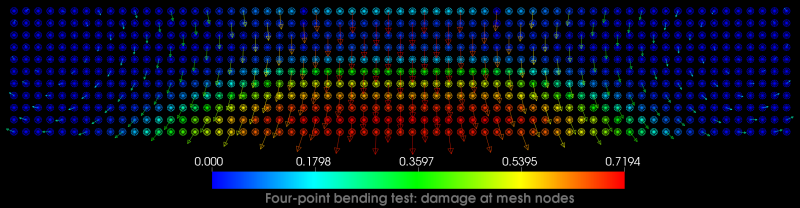
Homepage of Prashant K. Jha
Hi, I am a Postdoctoral research scholar in the Department of Mathematics, Louisiana State University. My work at LSU is guided and supported by Dr. Robert Lipton. I was recently awarded the Peter O'Donnell, Jr. Postdoctoral Fellowship (see link) in the Oden Institute for Computational Engineering and Sciences, University of Texas at Austin. I will join UT Austin beginning September 2019 where my work will be guided by Dr. J. Tinsley Oden. I completed my Ph.D. in August 2016 from Civil and Environmental Engineering, Carnegie Mellon University. At CMU I worked under the supervision of Dr. Kaushik Dayal.
My research interests lie in the intersection of fracture mechanics, multiscale methods and numerical analysis. I am motivated by the application of mechanics and computation in modeling of complex, multi-physics, and multi-scale phenomenon. Current work involves the application of Peridynamic theory in modeling fracture in solids.
Short Bio
Prashant Kumar Jha
Postdoc
Fracture mechanics, multiscale modeling, computational methods, and numerical analysis
145 Lockett Hall, Louisiana State University, Baton Rouge, LA 70820
pjha.sci@gmail.com, jha@math.lsu.edu, pjha4@lsu.edu
Curriculum Vitae
News
[May 2019] Paper titled "Finite element convergence for state-based peridynamic fracture models" got accepted for publication in Communication on Applied Mathematics and Computation (link) . This is a joint work with Dr. Lipton. arXiv preprint.
[April 2019] New paper titled "Numerical convergence of finite difference approximations for state based peridynamic fracture models" got published in Computer Methods in Applied Mechanics and Engineering. See online and pdf. This is a joint work with Dr. Lipton.
[April 2019] New paper titled "Complex fracture nucleation and evolution with nonlocal elastodynamics" got published in Journal of Peridynamics and Nonlocal modeling. See online and pdf. This is a joint work with Dr. Lipton and Dr. Lehoucq.
[February 2019] I will be joining University of Texas at Austin as a Postdoc beginning September 2019. My work will be guided by Dr. J. Tinsley Oden and it will be funded by Peter O'Donnell Postdoctoral Scholarship. You can find more details about the fellowship here.
[September 2018] Submitted paper "Finite element convergence for state-based peridynamic fracture models" for review and publication in Communication on Applied Mathematics and Computation. This is a joint work with Dr. Lipton.
[August 2018] Submitted paper "Numerical convergence of finite difference approximations for state based peridynamic fracture models" for review and publication in Computer Methods in Applied Mechanics and Engineering. This is a joint work with Dr. Lipton.
Work in Progress
List of projects on which I am currently working on.
In this work, we present robust implementation of finite element approximation for nonlocal fracture models. Numerical results are provided for linear continuous finite element approximation to verify the convergence rate. Special care is taken to compute the nonlocal force at a material point accurately. Numerical results are compared with experimental results.
In this work, we introduce a regularized state-based peridynamics model for free fracture propagation. We show that the model is well posed and solution exists in \(L^2\). In the limit of vanishing nonlocality, we obtain the \(\Gamma\)-limit of peridynamic energy.
We show that regularized nonlinear peridynamic model converges to classical fracture mechanics in the limit nonlocal length scale goes to zero. Limiting displacement field is shown to satisfy the elastodynamics equation away from crack, and zero traction condition on crack line. Numerical results are provided in support of the theoretical arguments.
Showcase of Research Work
Peridynamics: Brief introduction
Numerical analysis of finite difference approximation of bond-based peridynamics models
Numerical results to verify the convergence rate
Quadrature based finite element approximation
Numerical analysis of finite element approximation and existence of solutions in Sobolev space
Nomenclature
| Symbol | Description |
| \(D\) | Material domain |
| \(d = 1,2,3\) | Dimension |
| \([0,T]\) | Time domain where \( T > 0\) |
| \(\epsilon \) | Nonlocal length scale, horizon |
| \(x,y\) | Typical material points (in reference configuration) |
| \(u\) | Displacement field |
| \(\dot{u}, \partial_t u\) | Both denotes time derivative of displacement, i.e. velocity |
| \(\rho\) | Density |
| \(S, S(y,x)\) | Linearized bond strain |
| \(B_\epsilon(x)\) | Ball of radius \(\epsilon \) centered at \(x\) in dimension \(d\) |
| \(|B_\epsilon(x)|\) | Volume (area in 2-d, length in 1-d) of ball |
| \(\partial D\) | Boundary of domain \(D\) |
| \(dist(x,\partial D)\) | Distance of point \(x\) from boundary of domain \(D\) |
| \(-\nabla PD^\epsilon(u)(x) \) | Peridynamics force at point \(x\) |
| \(f\) | Smooth, concave and positive function used in nonlinear peridynamic model. Example: \( f(r) = C(1- \exp[-\beta r]) \) |
| \(J^\epsilon(r)\) | Influence function which is zero outside for \( r\geq \epsilon\). Example: \( J^\epsilon(r) =1 \) and \(J^\epsilon(r) = 1 - \frac{r}{\epsilon} \) |
| \(\omega\) | Boundary function which takes value 1 for points in \(D\) at least \(\epsilon\) away and zero on the boundary |
| \(W, W(S, y-x)\) | Bond energy density given by \(\frac{J^\epsilon(|y-x|)}{\epsilon|y-x|} f(|y-x|S^2) \) |
Peridynamics: Brief introduction
Let \(D\) be the material domain, \(d=1,2,3\) be the dimension, and \([0,T]\) is time domain. Let \(\epsilon\) be the size of horizon which controls the nonlocal interaction of a material point with its neighboring material points. If \(u : D\to \mathbf{R}^d\) is a displacement field and \(x,y \in D\) are two material points, then the stretch of the bond between two material points can be defined as $$ s(y,x;u) = \frac{|u(y) + y - u(x) - x|}{|y-x|}. $$ Assuming that the displacement is very small compared to material domain, we can linearize above equation and get linearized strain of the bond $$ S(y,x;u) = \frac{u(y) - u(x)}{|y-x|} \cdot \frac{y-x}{|y-x|}. $$ Let \(-\nabla PD^\epsilon(u)(x)\) denote the peridynamics force at point \(x\) corresponding to displacement field \(u\). If it was linear elastic material, the force at point \(x\) would be given by \(-\nabla\cdot\nabla \sigma(x) \). With peridynamic force \(-\nabla PD^\epsilon(u)(x)\), the evolution equation for displacement field \(u: [0,T]\times D \to \mathbf{R}^d\) is given by $$ \rho \ddot{u}(t,x) = -\nabla PD^\epsilon(u(t))(x) + b(t,x) $$ where \(u(t)\) denotes the function over \(D\) at time \(t\), \(\rho\) is the density, and \(b\) is the body force. Equation is complemented by the initial conditions \(u(0,x) = u_0(x)\) and \(\dot{u}(0,x) = v_0(x)\) and boundary condition \(u=0\) over nonlocal boundary \(D_c:= \{ x\in D: \text{dist}(x,\partial D) \leq \epsilon \}\).
Linear bond-based peridynamics force is of the form $$ -\nabla PD^\epsilon(u)(x) = \frac{2}{|B_\epsilon(x)|} \int_{B_\epsilon(x)} \hat{f}(y-x, u(y) - u(x)) \frac{y-x}{|y-x|} dy, $$ where \( \hat{f}(y-x, u(y) - u(x)) \) is the scalar bond force between point \(x,y\). Note that the force between bond is always along the bond vector \(\frac{y-x}{|y-x|}\). Bond force \(\hat{f}\) is a function of vector \( y -x\) and \( u(y) - u(x) \). PMB (prototypical microelastic brittle) material, introduced in Silling 2000, considers force \(\hat{f} \) of the form $$ \hat{f}(\xi, \eta) = \mu(s) \frac{c}{\epsilon |B_\epsilon(0)|} s, $$ where \( \xi = y-x, \eta = u(y) - u(x), s = S(y,x;u) \). Function \( \mu(s) \) is the bond-breaking function. If strain exceeds critical value \( s_0\), \( \mu(s) = 0 \), otherwise \(\mu(s) = 1 \). This is the most commonly used force in Peridynamics.
Numerical analysis of finite difference approximation of bond-based peridynamics models
We consider bond-based model proposed in Lipton 2014 and Lipton 2016. Peridynamics force is of the form $$ -\nabla PD^\epsilon(u)(x) = \frac{2}{|B_\epsilon(x)|} \int_{B_\epsilon(x)} \partial_S W^\epsilon(S(u), y-x) \frac{y-x}{|y-x|} dy, $$ where \(B_\epsilon(x)\) is the ball of radius \(\epsilon\). Potential \(W^\epsilon(S,y-x)\) is a function of bond-strain \(S\) and bond vector \(y-x\) and is given by $$ W^\epsilon(S,y-x) = \frac{1}{\epsilon |y-x|} J^\epsilon(|y-x|) f(|y-x|S^2), $$ where \(J^\epsilon\) is the influence function and \(f\) is the nonlinear potential function which is assumed to be smooth, concave, and positive. It also satisfies following properties at two extreme points $$ \lim_{r\to 0^+} \frac{f(r)}{r} = f'(0), \quad \lim_{r\to \infty} f(r) = f_\infty < \infty. $$ We assume influence function is defined by rescaling of function \(J\), i.e. \(J^\epsilon(r) = J(r/\epsilon)\) where \(0\leq J \leq M\) for all \(r< 1\) and \(J(r) = 0\) for \(r\geq 1\). We have $$ \partial_S W^\epsilon(S,y-x) = \frac{2S}{\epsilon} J^\epsilon(|y-x|) f'(|y-x|S^2), $$ and therefore peridynamics force is given by $$ -\nabla PD^\epsilon(u)(x) = \frac{4}{\epsilon|B_\epsilon(x)|} \int_{B_\epsilon(x)} J^\epsilon(|y-x|) f'(|y-x|S(y,x;u)^2) S(y,x;u) \frac{y-x}{|y-x|} dy. $$ For existence in regular spaces like Hölder space and Hilbert spaces, we also need to introduce another function \(\omega(x): D \to \mathbf{R}\) in potential \(W^\epsilon\). This function takes value \(1\) in the interior of domain \(D\) and smoothly decays from \(1\) to \(0\) as we approach boundary \(\partial D\) from interior. It takes value \(0\) outside \(D\). See Jha and Lipton 2018a and Jha and Lipton 2018b for more details. To keep presentation simple, we omit this fact and consider peridynamic potential and force without boundary function \( \omega \).
The model is nonlinear and is regularized version of prototypical micro-elastic brittle material (PMB). See below where we show force response of a bond for given strain for the nonlinear model as well as PMB material.
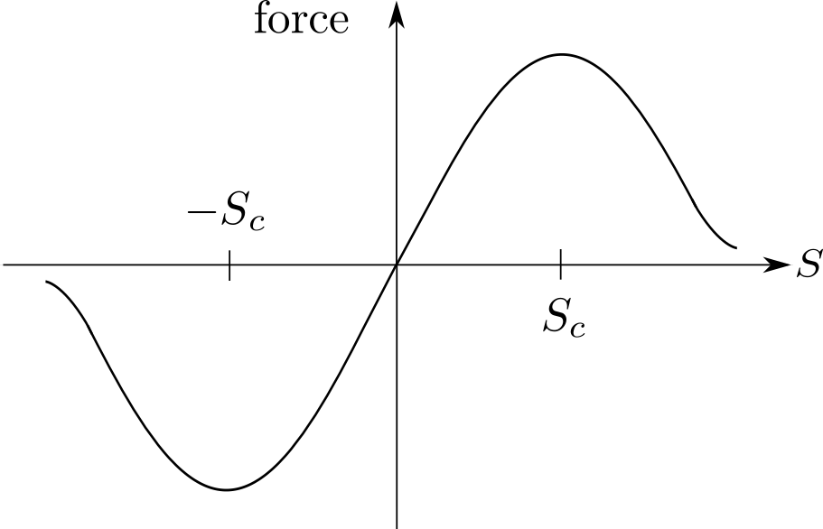
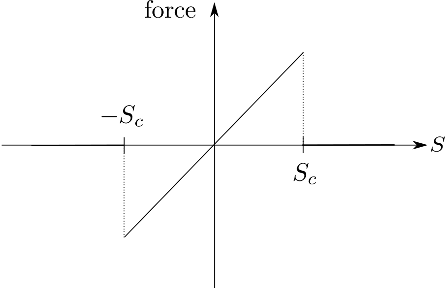
We consider Hölder space for numerical analysis. This choice of space is suitable for two reasons: one, it admits solution with discontinuity, and two, for nonlocal models it makes the estimation of errors easier. We first show existence of solutions (Jha and Lipton 2018a) in Hölder space \(C^{0,\gamma}(D;\mathbf{R}^d)\), where \(\gamma\) is the Hölder exponent taking values in \((0,1]\).
We can write the finite difference approximation as follows $$ \frac{\hat{u}^{k+1}_i - \hat{u}^k_i}{\Delta t} = \hat{v}^{k+1}_i $$ $$ \frac{\hat{v}^{k+1}_i - \hat{v}^k_i}{\Delta t} = -\nabla PD^{\epsilon}(\hat{u}^k_h)(x_i) + b^k_i , $$ where \(u^k_i, v^k_i\) is the approximate solution at time \(t^k = k\Delta t\) and \(x_i = ih \in D\). \(\Delta t\) is the size of time step and \(h\) is the mesh size. \(D_h = D\cap h\mathbf{Z}\) denotes the uniform discretization of domain. We denote the piecewise constant extension of discrete set \(\{u^k_i\}_i\) as \(u^k_h\). It is defined as $$ u^k_h(x) = \sum_{i, x_i \in D} u^k_i \chi_{U_i}(x), $$ where \(U_i\) is the unit cell associated to node \(i\) and \(\chi_{A}\) is the characteristics function which returns value \(1\) for points inside set \(A\) and \(0\) otherwise.
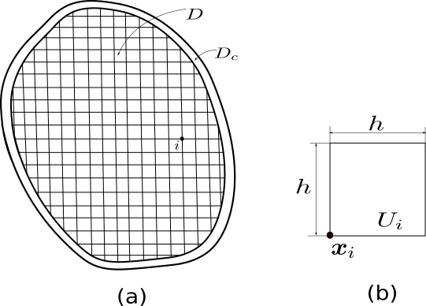
We have following result which shows the convergence of finite difference approximation
Numerical results to verify the convergence rate
We discuss the implementation of finite difference approximation of peridynamics model using HPX framework in Diehl et al 2018. Before presenting results, we describe the estimation of convergence rate without the exact solution. Consider three mesh sizes \(\{h_1,h_2,h_3\}\) with \(r = h_1/h_2 = h_2/h_3 > 1\). Let \(u_{h_i}\) for \(i=1,2,3\) be the approximate solution corresponding to three mesh sizes and let \(u_{exact}\) be the exact solution (possibly not known). We suppose for \( h' < h \) that \( \underline{C} h^\alpha \leq ||u_h - u_{h'}||_{L^2} = \bar{C} h^\alpha \) with \( \underline{C} \leq \bar{C} \) and \( \alpha > 0\). A straight forward calculation gives $$ \alpha \leq \frac{\log(||u_{h_1} - u_{h_2}||_{L^2}) - \log(||u_{h_2} - u_{h_3}||_{L^2}) + \log(\bar{C}) - \log(\underline{C})}{\log(r)} $$ so an upper bound on the convergence rate is at least as big as $$ b = \frac{\log(||u_{h_1} - u_{h_2}||_{L^2}) - \log(||u_{h_2} - u_{h_3}||_{L^2})}{\log(r)}. $$ \( b\) provides an estimate for rate of convergence \( \alpha \). Once we have results \( u_1, u_2, u_3\) for three mesh sizes, we can compute \( b\).
We now present the convergence result for two different initial conditions. Consider square material domain \(D = [0,1]^2\). Fix size of horizon \(\epsilon = 0.05\). We consider three mesh sizes \(h = \epsilon/2, \epsilon/4, \epsilon/8\). Time domain is \([0,2.0]\) and size of time step is \(\Delta t = 10^{-5}\).
For nonlinear peridynamics force \(-\nabla PD^\epsilon(u)(x)\), see above for expression, we consider influence function \(J^\epsilon(r) = 1\) for \(r <\epsilon\) and zero otherwise. Nonlinear potential \(f\) is given by \(f(r) = C(1-\exp[-r\beta]) \) with \(C = 1, \beta = 1\). Boundary condition \(u=0\) is prescribed on nonlocal boundary \(D_c:= \{ x\in D: \text{dist}(x,\partial D) \leq \epsilon \}\). We prescribe initial condition: $$ u_0(x) = a\exp [-|x-x_c|^2/\beta], v_0(x) = 0, $$ where \(a, x_c \in \mathbf{R}^2\). For first problem we choose \(a = (0.001, 0), x_c = (0.25,0.25), \beta = 0.003\). For second problem we choose \(a = (0.0002, 0.0007), x_c = (0.25,0.25), \beta = 0.01\).
Below is the plot of lower bound on rate of convergence at different times up to time \(T = 2.0\). It is a dynamics problem so we see some fluctuation in the rate plot, however, we note that rate is mostly above theoretical value of \( 1\).
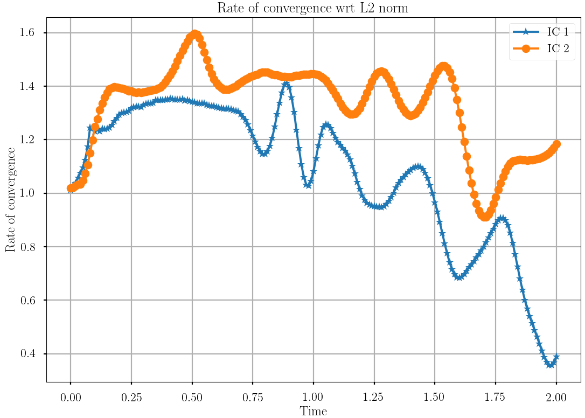
Quadrature based finite element approximation
In Jha and Lipton 2018, we analyzed the quadrature based finite element approximation in one dimension. We present some of the key results of the work here. We first show that in the limit \( \epsilon \to 0\), the solution of peridynamics equation converges to the solution of elastodynamics equation.
1. Convergence of peridynamics solution in the limit size of horizon going to zero
Recall that \(-\nabla PD^\epsilon(u)(x)\) denotes the peridynamic force. Let \((0,1)\) is the material domain. Let \(u^\epsilon\) denote the solution of peridynamic equation for given size of horizon \(\epsilon > 0\). \(u^\epsilon\) solves $$ \rho \ddot{u}^\epsilon(t,x) = -\nabla PD^\epsilon(u^\epsilon(t))(x) + b(t,x). $$ Let \(u\) denote the solution of following elastodynamics equation $$ \rho \ddot{u}(t,x) = \mathbb{C} u_{xx}(t,x) + b(t,x). $$ We specify same initial condition for \(u^\epsilon\) and \(u\), i.e. \(u^\epsilon(0,x) = u_0(x) = u(0,x)\) and \(\dot{u}^\epsilon(0,x) = v_0(x) = \dot{u}(0,x)\). For \(u^\epsilon\), boundary condition \(u^\epsilon(t,x) = 0\) is specified on nonlocal boundary \((-\epsilon, 0]\cup [1,1+\epsilon)\) and for \(u\) boundary condition \(u(t,x) = 0\) is specified at \(x = 0,1\). \(\mathbb{C}\) is related to the peridynamic force in following way $$ \mathbb{C} = \frac{1}{\epsilon^2} \int_{x-\epsilon}^{x+\epsilon} J^\epsilon(|y-x|) f'(0) |y-x| dy. $$ Using the fact that \(J^\epsilon(r)\) is defined by rescaling of function \(J\), i.e. \(J^\epsilon(r) = J(r/\epsilon)\), it can be easily shown that $$ \mathbb{C} = \int_{-1}^{1} J(|z|) f'(0) |z| dz. $$ Recall that \(J^\epsilon\) and function \(f\) are used to describe peridynamics force. Peridynamics force in dimension \(d=1\) is given by $$ -\nabla PD^\epsilon(u)(x) = \frac{2}{\epsilon^2} \int_{x-\epsilon}^{x+\epsilon} J^\epsilon(|y-x|) f'(|y-x|S(y,x;u)^2) S(y,x;u) dy. $$ In 1-d, definition of bond strain is simplified and is given by $$ S(y,x;u) =\frac{u(y) - u(x)}{|y-x|}. $$ We will see next that \(\mathbb{C} u_{xx}\) is the limit of \(-\nabla PD^\epsilon\) when \(\epsilon \to 0\) and when field \(u\) is sufficiently smooth. We have following results which show convergence of peridynamics solution \(u^\epsilon\) to elastodynamics solution \(u\).
2. Numerical scheme
Let \(h\) be the size of mesh, \(\Delta t\) be the size of time steps, \(D_h = D\cap h\mathbf{Z}\) and \(D_{c,h} = D_c \cap h\mathbf{Z}\) be the discretization of spatial domain, and \([0,T] \cap \Delta t\mathbf{Z}\) be the discretization of time domain. Let index set \(K= \{i\in \mathbf{Z}: ih \in D\}\) correspond to domain \(D\) and \(K_c= \{i\in \mathbf{Z}: ih \in D_c\}\) correspond to nonlocal boundary \(D_c = (-\epsilon, 0] \cap [1,1+\epsilon)\). We define interpolation operator \( I_h[\cdot]\) for a given function \(g: \overline{D\cup D_c} \to \mathbf{R}\) as follows $$ I_h[g(y)] = \sum_{i\in K \cup K_c} g(x_i) \phi_i(y), $$ where \(\phi_i(y)\) is the value of interpolation function corresponding to node \(i\) at point \(y\). We consider linear interpolation function. For simplification we let \(\epsilon = mh\) where \(m\geq 1\) is integer. Let \(hat{u}^\epsilon_h(t)\) is the extension of discrete set \(\{\hat{u}^\epsilon_i\}_{i\in K\cup K_c}\) and is given by $$ \hat{u}^\epsilon_h(t,x) = E[\{\hat{u}^\epsilon_i\}_{i\in K\cup K_c}] = \sum_{i\in K \cup K_c} \hat{u}^\epsilon_i \phi_i(x). $$
Let \(\hat{u}^{\epsilon,k}_{i}\) denote the approximate solution at time \(t^k = k\Delta t\) and \(x_i = ih\) and for given \(\epsilon >0\). It satisfies following central difference scheme $$ \rho\frac{\hat{u}^{\epsilon,k+1}_{i} - 2 \hat{u}^{\epsilon,k}_{i} + \hat{u}^{\epsilon,k-1}_{i}}{\Delta t^2} = -\nabla PD^\epsilon (\hat{u}^{\epsilon,k}_h) (x_i) + b(t^k,x_i), $$ where \( \hat{u}^{\epsilon,k}_h \) is the extension of discrete set \(\{\hat{u}^{\epsilon,k}_{i} \}_{i\in K\cup K_c} \). We let \( \rho = 1\) for simplicity.
Stability can be shown for linearized peridynamics. Linearized peridynamics force is obtained by setting nonlinear term \(f'(|y-x|S^2)\) equal to \(f'(0)\). Denoting linearized peridynamic force as \(-\nabla PD^\epsilon_l(u)\), we have $$ -\nabla PD^\epsilon_l(u)(x) = \frac{2f'(0)}{\epsilon^2} \int_{x-\epsilon}^{x+\epsilon} J^\epsilon(|y-x|) S(y,x;u) dy. $$ If \(\hat{u}^{\epsilon,k}_{i}\) satisfies following $$ \rho\frac{\hat{u}^{\epsilon,k+1}_{i} - 2 \hat{u}^{\epsilon,k}_{i} + \hat{u}^{\epsilon,k-1}_{i}}{\Delta t^2} = -\nabla PD^\epsilon_l (\hat{u}^{\epsilon,k}_h) (x_i) + b(t^k,x_i) $$ then we can write above equation in simpler matrix form. Let \(U_h^k = (\hat{u}^{\epsilon,k}_i)_{i\in K}\) then \(U_h^k\) satisfies $$ \frac{U^{k+1}_h - 2 U^k_h + U^{k-1}_h}{\Delta t^2} = AU^k_h + B^k $$ with \(A = (a_{ij})\) given by $$ a_{ij} = \bar{a}_{ij} \quad (\text{if }j\neq i) $$ and $$ a_{ij} = -\sum_{m\in K\cup K_c, m\neq i} \bar{a}_{ik} \quad (\text{if }j = i) $$ where $$ \bar{a}_{ij} = \frac{2f'(0)}{\epsilon^2} \int_{x_i - \epsilon}^{x_i + \epsilon} \frac{\phi_j(y) J^\epsilon(|y-x_i|)}{|y-x_i|} dy. $$ \(B^k = (b^k_i)\) is given by $$ b_i^k = b(t^k,x_i) + \sum_{j\in K_c, j\neq i} \bar{a}_{ij} \hat{u}^{\epsilon,k}_{j}. $$ In above, for \(j \in K_c\), since \(K_c\) corresponds to nonlocal boundary \(D_c\), the second term is due to nonzero boundary condition \(\hat{u}^{\epsilon,k}_j\) specified on \(D_c\).
3. Convergence of numerical scheme
We have following results which estimate the difference between exact peridynamics force and approximate peridynamics force. We also state result which show that approximate peridynamics force converges to elastodynamics force in the limit \(h\leq \epsilon \to 0\).
4. Stability of central difference approximation and CFL condition
For linearized peridynamics, we can show using the properties of matrix \(A\) the stability of central difference scheme and also obtain the explicit CFL condition depending on material parameters and mesh size. We have following important result.
5. Numerical results
Let domain is \(D=(0,1)\), size of horizon \(\epsilon = 0.01\), time domain \([0,0.5]\), and size of time step is \(\Delta t = 0.00001\). We consider nondimensional equation, see Jha and Lipton 2017b. Influence function is given by \(J(r) = 2 \alpha r(-r^2/\beta)/\sqrt(\pi) \) with \( \alpha = 1, \beta = 0.4\). Nonlinear function is of the form \(f(r) = C(1-\exp[-r\beta])\) with \(C = 1, \beta = 1/M\) where \(M := 2\int_0^1 J(r) rdr\).
Initial condition is of the form: \(u_0(x) = a\exp[-(0.25 - x)^2/\beta] + a\exp[-(0.75-x)^2/\beta] \) and \(v_0(x) = 0\). We have two Gaussian pulse centered at \(x=0.25, 0.75\) as initial condition on displacement. We choose \(a = 0.005, \beta = 0.00001\). Below is the plot of rate of convergence at different time steps. We have considered three different mesh sizes \(h = \epsilon/100, \epsilon/200, \epsilon/400\) to compute the rate of convergence using formula described in this page. We expect \(O(h)\) convergence i.e. slope of \(1\). The plots show that solutions converge at a rate higher than \(1\) for most of the time steps. Note final time is chosen such that it includes the wave reflection effect. Characteristics wave speed is \(1\) in nondimensional form and Gaussian pulses are at \(0.25\) distance from either boundary. Thus \(0.5\) unit of time is enough to include the wave reflection effect.
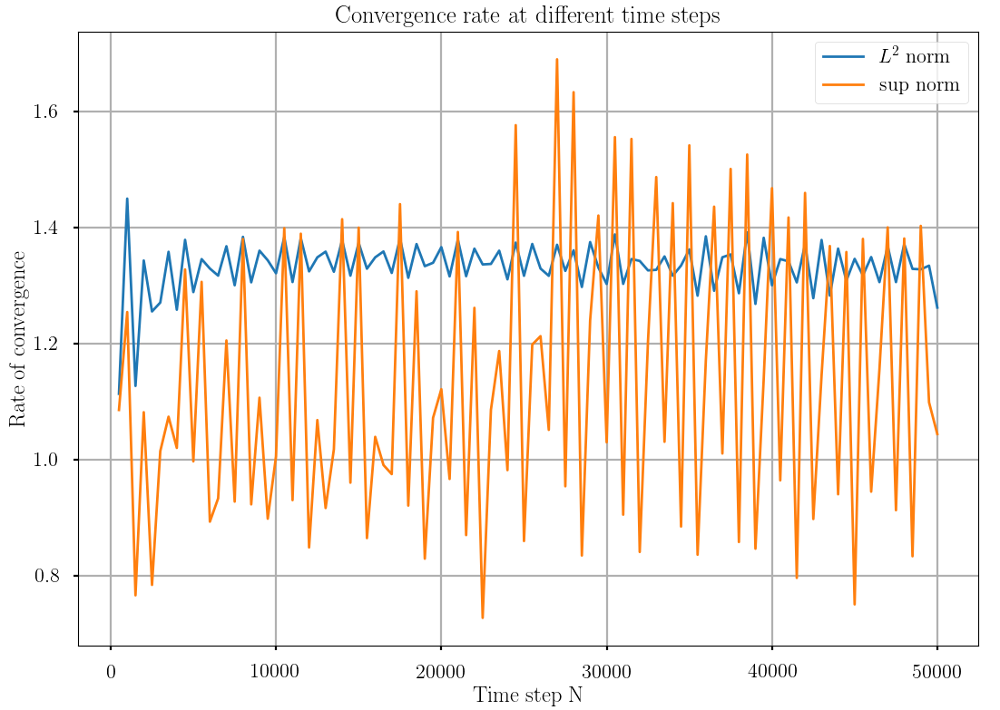
In second problem we consider higher final time \(T = 1.7\). Initial condition is of the form: \(u_0(x) = a\exp[-(0.5 - x)^2/\beta]\) and \(v_0(x) = 0\). We have a Gaussian pulse centered at \(x=0.5\) as initial condition on displacement. We choose \(a = 0.005, \beta = 0.00001\). We fix size of horizon to \(\epsilon = 0.1\) and consider three different mesh sizes \(h = \epsilon/10, \epsilon/100, \epsilon/1000\) to compute the rate of convergence. The plots show that solutions stay around value \(1\) which agrees with theoretical claims.
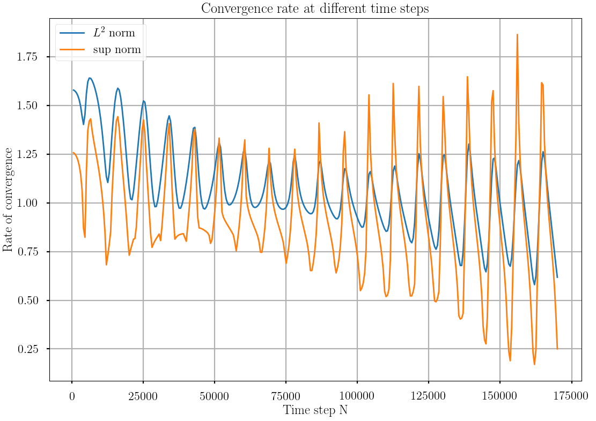
Numerical analysis of finite element approximation and existence of solutions in Sobolev space
In Jha and Lipton 2017c, we analyze finite element approximation and prove rate of convergence of \(O(\Delta t + h^2/\epsilon^2)\). We first show the existence of solutions in \(H^2(D;\mathbf{R}^d) \cap L^\infty(D;\mathbf{R}^d)\) over any finite time interval \((-T, T)\).
1. Existence of solution in \(H^2(D;\mathbf{R}^d)\cap L^\infty(D;\mathbf{R}^d)\)
We prove Lipschitz bound on peridynamics force, see [Theorem 3.1, Jha and Lipton 2017c] in space \(H^2(D;\mathbf{R}^d)\cap L^\infty(D;\mathbf{R}^d)\). Using bound on force, we establish local existence of solutions. Following theorem shows that local existence theorem can be extended to finally show existence of solution over any finite time interval \((-T,T)\).
2. Finite element approximation
Let \(V_h\) be the approximation of \(H^2_0(D;\mathbf{R}^d)\) associated to the linear continuous interpolation function over triangulation \(\mathcal{T}_h\). Here \(h\) denotes the size of finite element mesh. We seek approximate solution \(u^k_h, v^k_h\) at time \(t^k\) in \(V_h\) such that following holds for all \(\tilde{u} \in V_h\) $$ \left( \frac{u^{k+1}_h - u^k_h}{\Delta t}, \tilde{u} \right) = (v^{k+1}_h, \tilde{u}), $$ $$ \left( \frac{v^{k+1}_h - v^k_h}{\Delta t}, \tilde{u} \right) = (-\nabla PD^\epsilon(u^k_h), \tilde{u} ) + (b^k_h, \tilde{u}). $$ If we combine above two equations, we get standard central difference equation $$ \left( \frac{u^{k+1}_h - 2 u^k_h + u^{k-1}_h}{\Delta t^2}, \tilde{u} \right) = (-\nabla PD^\epsilon(u^k_h), \tilde{u} ) + (b^k_h, \tilde{u}). $$ For \(k=0\), we have for all \(\tilde{u} \in V_h\) $$ \left( \frac{u^1_h - u^0_h}{\Delta t^2}, \tilde{u}\right) = \frac{1}{2}(-\nabla PD^\epsilon(u^0_h), \tilde{u})+ \dfrac{1}{\Delta t} (v^0_h, \tilde{u}) + \dfrac{1}{2}(b^0_h, \tilde{u}) $$ where \(u^0_h, v^0_h, b^k_h\) are pojection of initial condition \(u^0, v^0\) and body force \(b(t^k)\).
2.1 Stability of central difference approximation of linearized peridynamics
We define linearized peridynamics force \(-\nabla PD^\epsilon_l(u)\) by replacing nonlinear term \(f'(|y-x|S(u)^2)\) with \(f'(0)\). It is given by $$ -\nabla PD^\epsilon_l(u)(x) = \frac{4f'(0)}{\epsilon|B_\epsilon(x)|} \int_{B_\epsilon(x)} J^\epsilon(|y-x|) S(y,x;u) \frac{y-x}{|y-x|} dy. $$ Let discrete energy, for \(u^k_{l,h}\) at time step \(k\), is defined as $$ \mathcal{E}(u^k_{l,h}) := \frac{1}{2} \left[ ||\bar{\partial}^+_t u^k_{l,h}||^2 - \frac{\Delta t^2}{4} a^\epsilon_l(\bar{\partial}^+_t u^k_{l,h}, \bar{\partial}^+_t u^k_{l,h}) + a^\epsilon_l(\overline{u}^{k+1}_{l,h} , \overline{u}^{k+1}_{l,h}) \right], $$ where $$ \overline{u}^{k+1}_h := \frac{u^{k+1}_h + u^k_h}{2}, $$ and $$ \bar{\partial}_t^+ u^k_h := \frac{u^{k+1}_h - u^{k}_h}{\Delta t}. $$ We have following stability result for linearized peridynamics
2.2 Convergence of approximation
We have following result which shows order of \(\Delta t + h^2/\epsilon^2\) convergence.
Free damage with propagation: Damage model with memory
In Lipton et al 2017d, we propose new damage model within the framework of peridynamics theory. Damage model is state-based and has history dependent damage function. Let \(u:[0,T]\times D\to \mathbf{R}^d\) be the displacement field. Bond strain \(S(y,x,t;u)\) is defined as (similar to previous definition) $$ S(y,x,t;u) = \frac{u(t,y) - u(t,x)}{|y-x|} \cdot e_{y-x} $$ where \(e_{y-x} = \frac{y-x}{|y-x|}\). Hydrostatic strain \(\theta(x,t;u)\) is defined as $$ \theta(y,t;u) = \frac{1}{|B_\epsilon(x)|} \int_{D\cap B_\epsilon(x)} \omega^\epsilon (|y-x|) |y-x| S(y,x,t;u) dy, $$ where \(\omega^\epsilon(r)\) is the influence function similar to \(J^\epsilon(r)\). In this model, the peridynamics force is due to two interactions: one due to bond-bond interaction within horizon, and two, due to hydrostatic strain. Let \(\mathcal{L}^T(u)(x,t)\) denote the peridynamics force at \(x\) due to bond-bond interaction and \(\mathcal{L}^D(u)(x,t)\) denote the force at \(x\) due to hydrostatic strain. They are given by $$ \mathcal{L}^T(u)(x,t)=\frac{2}{|B_\epsilon(x)|}\int_{D\cap B_\epsilon(x)}\frac{J^\epsilon(|y-x|)}{\epsilon{|y-x|}}H^T(u)(y,x,t)\partial_S f(\sqrt{|y-x|}S(y,x,t;u))e_{y-x}\,dy, $$ and $$ \mathcal{L}^D(u)(x,t)=\frac{1}{|B_\epsilon(x)|}\int_{D\cap B_\epsilon(x)}\frac{\omega^\epsilon(|y-x|)}{\epsilon^2}\left[H^D(u)(y,t)\partial_\theta g(\theta(y,t;u))+ H^D(u)(x,t)\partial_\theta g(\theta(x,t;u))\right]e_{y-x}\,dy. $$ We mainly focus on two special functions appearing in above definition of forces. Function \(H^T(u)(y,x,t)\) denotes the damage of bond between \(y,x\) at time \(t\). Function \(H^D(u)(x,t)\) denotes the damage of a material point \(x\) at time \(t\) due to evolution of hydrostatic strain \(\theta(x,t;u)\) at material point \(x\). \(H^T\) and \(H^D\) are function which depend on history of bond-strain between \(y,x\) and history of hydrostatic strain at \(x\) respectively. They are defined as $$ H^T(u)(y,x,t)=h\left(\int_0^tj_S(S(y,x,\tau;u))\,d\tau\right) $$ and $$ H^D(u)(x,t)=h\left(\int_0^t j_\theta(\theta(x,\tau;u))\,d\tau\right). $$ \(j_S\) and \(j_\theta\) are non-decreasing positive function. Physically what it means is that once the bond-strain exceeds some critical strain for which \(j_S > 0\), then the bond is damaged for all time to come. If bond-strain remains below critical strain after exceeding it once then damage would be fixed to the value it attained when strain exceeded critical strain. However if bond strain keep exceeding critical strain for sufficient amount of time then the bond-damage will increase and ultimately \(H^T(y,x,t;u) = 0\) meaning the bond between \(y,x\) has been broken for all time \(t' \geq t\). Similar interpretation can be drawn for damage function \(H^D\).
We present few numerical results which highlight various properties of a damage model. In what follows, we will plot total damage of a material point \(x\) due to bond-bond interaction. We will choose parameters such that for the range of strains, damage will only be due to bond-bond interaction, i.e. \(H^D\) will remain \(1\). Total damage \(\phi(x,t;u)\) of a material point can be defined as $$ \phi(x,t;u) = 1 - \frac{\int_{D\cap B_\epsilon(x)} H^T(u)(y,x,t) dy}{\int_{D\cap B_\epsilon(x)} dy}. $$ \(\phi(x,t;u)\) shows extent of damage experienced by material point \(x\) at time \(t\).
1. Shear loading
We consider generic values of various parameters in the model and apply shear loading to the material. The boundary condition is described in the image below
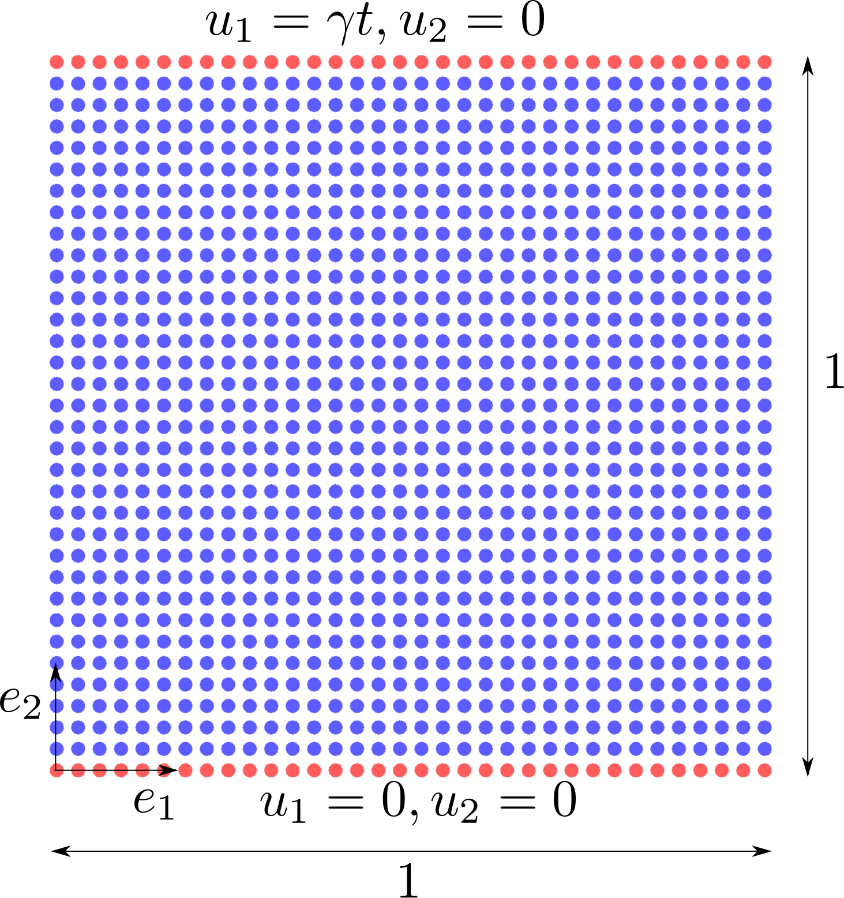
We plot the value of \(\phi(x,t;u)\) at all mesh points at final time step. Video of simulation is also attached.
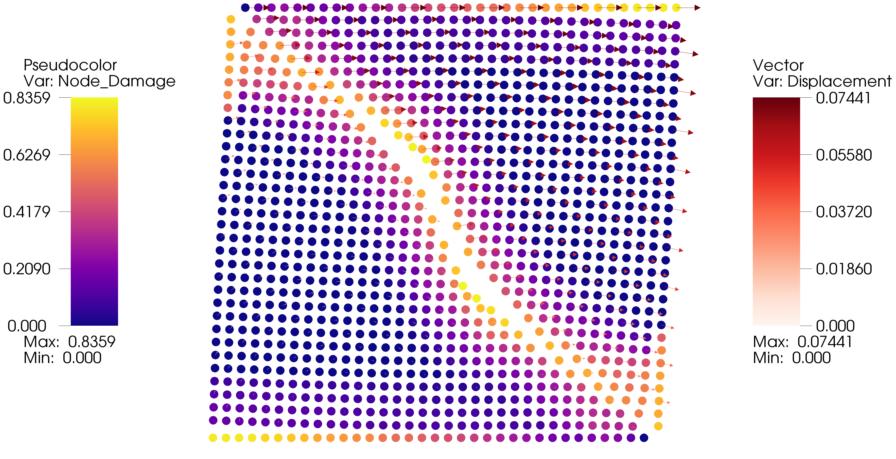
2. Bending loading
We apply three-point and four-point bending load on beam of length \(1\) and width \(0.15\). Beam is supported at two points in bottom. In case of three-point loading, monotonically increasing force is applied at center mesh node on top. In case of four-point loading, the monotonically increasing force is applied at two points on top, see picture below. Following image shows the setup for four-point test.
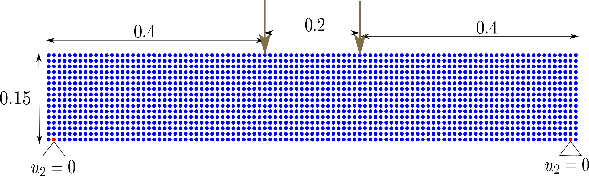
We plot the value of \(\phi(x,t;u)\) at all mesh points at final time step for four-point test. Video of simulation is attached for both four-point and three-point test.
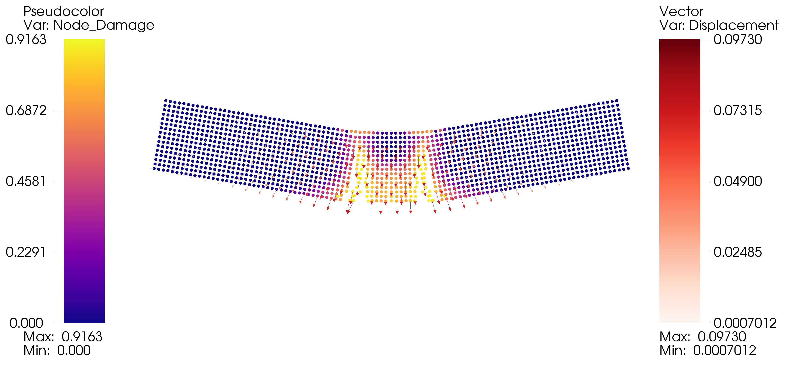
Refereed Journal Publications
Below are research publications which are either submitted to the journal or are published.
[2017-1] Numerical analysis of nonlocal fracture models in Hölder space. Prashant K. Jha and Robert Lipton. SIAM Journal on Numerical Analysis, 10 April 2018, 56(2), 906-941, DOI. Print pdf.
[2017-2] Numerical convergence of nonlinear nonlocal continuum models to local elastodynamics. Prashant K. Jha and Robert Lipton. International Journal for Numerical Methods in Engineering, 19 February 2018, 114(13), 1389-1410, DOI. Print pdf.
[2017-3] Free damage propagation with memory. Robert Lipton, Eyad Said and Prashant K. Jha. Journal of Elasticity, 14 March 2018, 133(2), 129-153, DOI. Print pdf.
[2017-4] Finite element approximation of nonlocal fracture models. Prashant K. Jha and Robert Lipton. Submitted for review in Discrete and Continuous Dynamical Systems Series B on May, 2019. arXiv preprint.
[2018-1] Numerical convergence of finite difference approximations for state based peridynamic fracture models. Prashant K. Jha and Robert Lipton. Computer Methods in Applied Mechanics and Engineering, 1 July 2019, 351(1), 184 - 225, DOI. Print pdf.
[2018-2] Implementation of Peridynamics utilizing HPX -- the C++ standard library for parallelism and concurrency. Patrick Diehl, Prashant K. Jha, Hartmut Kaiser, Robert Lipton and Martin Levesque. Submitted for review in Computer and Mathematics with Applications on April 2019. arXiv preprint.
[2018-3] Finite element convergence for state-based peridynamic fracture models. Prashant K. Jha and Robert Lipton. Accepted for publication in Communication on Applied Mathematics and Computation (CAMC) on May, 2019. arXiv preprint.
[2018-4] Complex fracture nucleation and evolution with nonlocal elastodynamics. Robert Lipton, Richard B. Lehoucq and Prashant K. Jha. Journal of Peridynamics and Nonlocal Modeling April 2019, 1-9, DOI. Print pdf
Book Chapters
Below are the book chapters either published or under review.
[2018-1] Well posed nonlinear nonlocal fracture models associated with double well potentials. Prashant K. Jha and Robert Lipton. Book: Handbook of Nonlocal Continuum Mechanics for Materials and Structures. DOI. Print pdf.
[2018-2] Finite difference and finite element in nonlocal fracture modeling: A-priori convergence rates. Prashant K. Jha and Robert Lipton. Book: Handbook of Nonlocal Continuum Mechanics for Materials and Structures. DOI. Print pdf.
[2018-3] Dynamic brittle fracture from non-local double well potentials: A state based model. Robert Lipton, Eyad Said and Prashant K. Jha. Book: Handbook of Nonlocal Continuum Mechanics for Materials and Structures. DOI. Print pdf.
[2018-4] Dynamic damage propagation with memory: A state based model. Robert Lipton, Eyad Said and Prashant K. Jha. Book: Handbook of Nonlocal Continuum Mechanics for Materials and Structures. DOI. Print pdf.
-
WCCM-13, New York
July 2018 Presented my work with co-author Dr. Robert Lipton at 13th World Congress on Computational Mechanics on 25th July 2018. See Title-abstract and presentation pdf. -
IISc, Bengaluru
May 2018 Presented my recent work at Department of Mathematics, Indian Institute of Science, on May 1, 2018. -
LSU, Baton Rouge
March 2018 Presented my recent work at Department of Mathematics, Louisiana State University, on March 19, 2018. -
USNCCM-14, Montreal
July 2017 Presented my work with co-author Dr. Robert Lipton at 14th US National Congress on Computational Mechanics on 19th July 2017. See Title-abstract and presentation pdf.Slides of presentation on Slideshare: Numerical Analysis of Nonlocal Fracture Models. -
UMN, Minneapolis
March 2017 AEM Mechanics Research Seminar, Aerospace Engineering and Mechanics, University of Minnesota. Title: Coarse Graining of Electric Field Interactions with Materials. Date: March 21, 2017. Read abstract here and presentation here.Slides of presentation on Slideshare: Coarse Graining of Electric Field Interactions with Materials. -
UMN, Minneapolis
April 2017 IMA Postdoc Seminar, Institute for Mathematics and its Applications, University of Minnesota. Title: Numerical Analysis of Nonlocal Fracture Models. Date: April 4, 2017. See abstract and presentation pdf. Video of my talk can be found here.Slides of presentation on Slideshare: Numerical Analysis of Nonlocal Fracture Models. -
UMN, Minneapolis
Feb 2017 - June 2017 Visited Institute for Mathematics and its Applications, University of Minnesota. -
IISc, Bengaluru
August 2016 Departmental Seminar, Department of Mechanical Engineering, Indian Institute of Science, Bangalore(India). Talked about my research as a graduate student. Date: August 19, 2016. Find the presentation pdf here. -
IIT, Chennai
August 2016 Departmental Seminar, Department of Mechanical Engineering, Indian Institute of Technology, Chennai (India). Talked about my research as a graduate student. Date: August 22, 2016. Find the presentation pdf here.
Old Intel 5960X build and Asus desktop
I like building desktop computers and assembling all the parts. Currently I own Intel i7 5960X extreme processor. With liquid cooling loop, this processor can be clocked to speed as high as 4.5 GHz. Check out some pics of dekstop build and also Asus 970 Pro Gaming Aura desktop. *Slideshows are made using open source project simplelightbox.
{kind=link}
{kind=link}
{kind=link}
{kind=link}
{kind=link}
{kind=link}
{kind=link}
{kind=link}
New Intel 5960X build
I updated the liquid cooling system of my desktop and installed couple of new sensors, new RGB fans and RGB lights. Desktop now has flow sensor which shows whether the coolant is flowing through the tubes and temperature sensor which measures the temperature of cooled liquid just before it flows into CPU.
{kind=link}
{kind=link}
{kind=link}
{kind=link}
{kind=link}
{kind=link}
{kind=link}
{kind=link}
{kind=link}
{kind=link}
{kind=link}
{kind=link}
{kind=link}
{kind=link}
Birds
I have four parakeet birds. I have had them since May 2015. Sharing few pics of birds below.
{kind=link}
{kind=link}
{kind=link}
{kind=link}
{kind=link}
{kind=link}
{kind=link}
Recently I got Sun Conure. When I got him (or her!) he was 7-8 weeks baby. He is very energetic and wants to play all the time. Sharing few videos of him playing and resting.